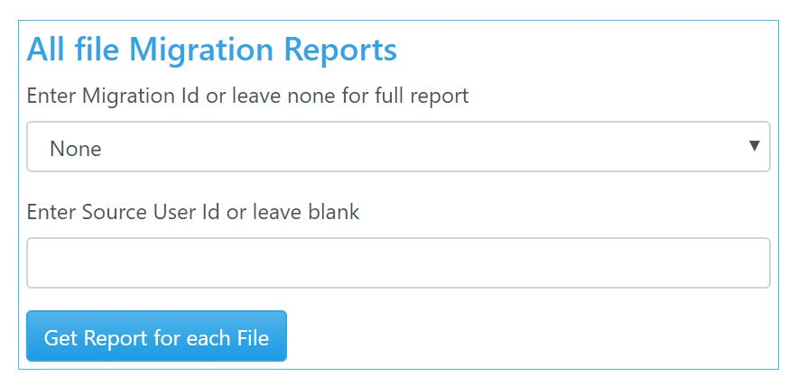

Retrieve detailed reports on Migration from Reports tab. Reports are exported in a CSV format.
Current reports available in application are:
This reports just exports all migrations that were done in Application. It gives basic details of migration and options used in migration.
Typically, this report retrieves details of files or folder that were migrated for each batch of migration. This report is also used when detailed report was requested on file/folders from Remediation tab. Based on how Migration or Remediation each column in this report may show different information that is indicated by column header. In this report migration status is particularly important field on each file or folder that indicates if there is a failure. Associated with Migration Status is Migration Comments that explains in detail if there is a failure and reason for failure. This reports also indicates Source and Destination IDs for files/folder that were migrated. If Migration was successful a Destination ID is shown.
There are also individual user Ids and Migration Complete message indicating if migration was completed successfully. Hence to count total number of files/folder migrated discount those entries or run Pivot reports on data.
It is recommended that for large data sets user selects Migration batch and/or enter respective User IDs for reports on particular migration that needs to be retrieved.
Note: For Permission migration, folder migration does not show a failed status. Hence look in this column for comments related permission migration and if any failure may have occurred.
If UploadMappingFilesforUsersAndGroups option was used when applying for permission during migration, you were required to upload a User mapping file. Retrieve the user mapping details for a specific batch of Migration from this section.
Over a period of time Database size grows. Migrator application uses a local database for results storage and do not uses an Enterprise database (like SQL Server). This is done to ensure migration are faster and roundtrips in storing data in a non-local database is avoided. Since database resides in your application it grows over time. It is recommended that database size is kept less than 2 GB or approximately 3 Million entries. Use options Delete All File Migration Report and Delete Permission Algorithm Report to reduce the size of database.
Note: File Migration Report should not be used when resyncing is required on data from migration tab.
Note: All report files in CSV format are generated in root app folder of this web application. Hence before using this delete option, it is recommended to retrieve CSVs for all file/folders. Hence CSVs serves as an archive in the same application root folder. Also, if application is used over a very long period, cloud administrator can take a backup of those files and clear root folder.